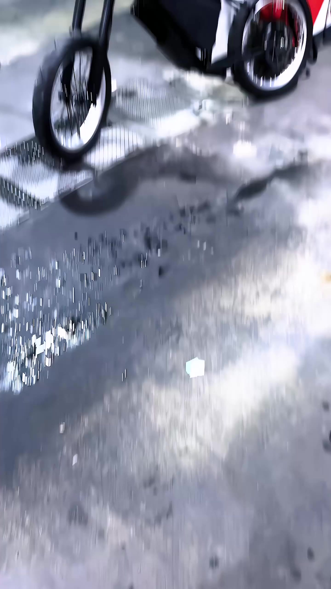
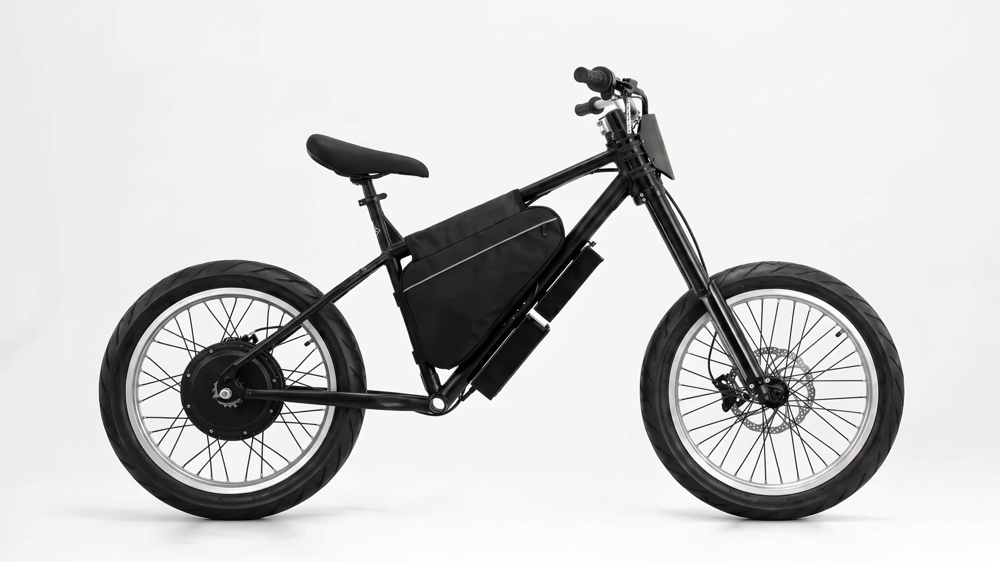

Transition prototypes
v2 / pick one

A new era of
riding starts here.

Replay
Slow-mo: off
auto-replays · same base timeline in every variant, only the chosen tweak differs · slow-mo helps judge the quick beats (1 & 2)